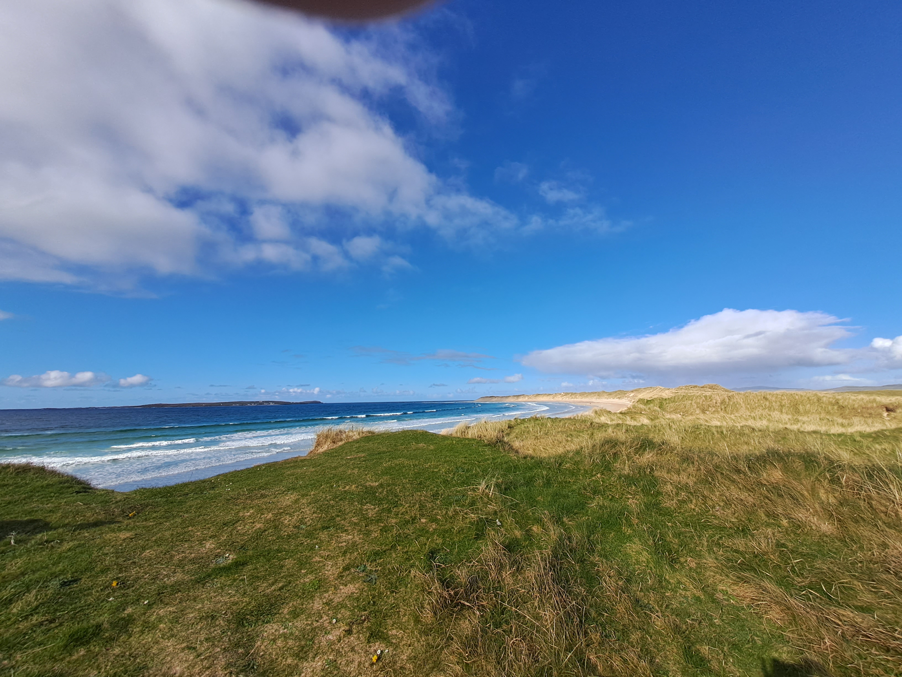
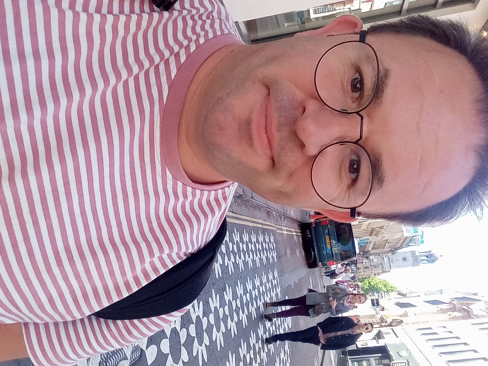
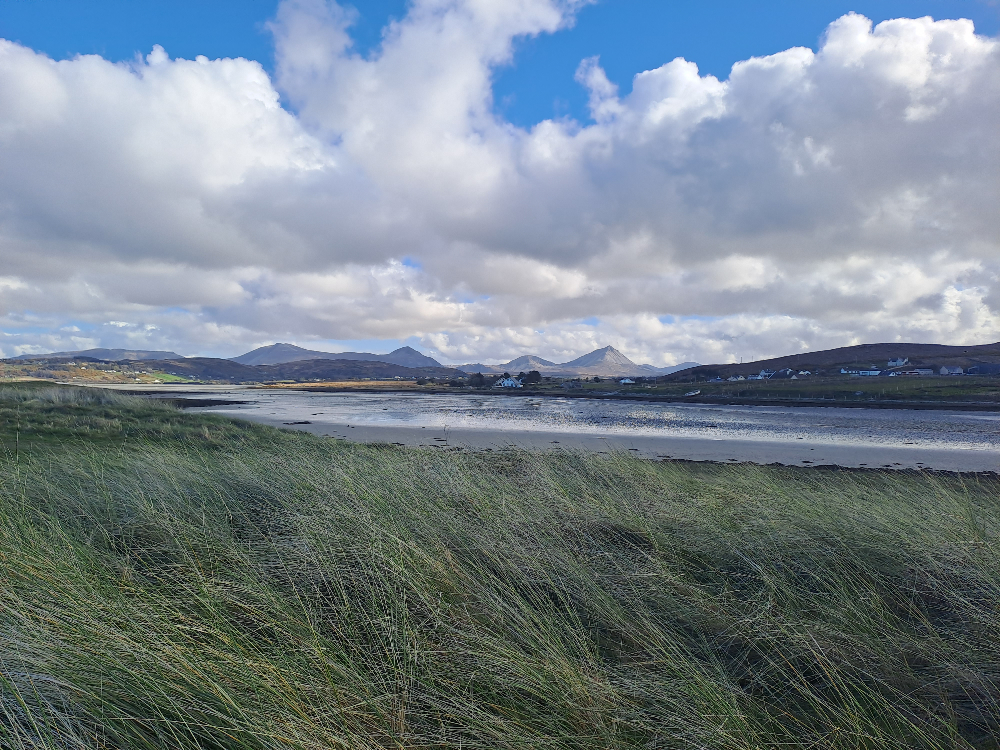

Chapter I — Profile
Profile
Professional identity, working style, judgement and standards.
Open chapter
Professional Focus
My work sits where people, systems and decisions need bringing into better order.
My experience spans information security administration, access management, technical support, service operations, customer operations, healthcare administration, legal process and practical service environments across the UK and Ireland. I am particularly useful where technical teams, managers, suppliers and operational users need someone to organise detail, clarify requirements, maintain clear records and keep work moving.
The common thread is simple: I like to find the shape of a problem, organise the moving parts, and help teams and people get from confusion to something workable.
This site is part professional profile, part workbench, and part practical record: a place to show how I think, how I work, and the sort of systems, records and practical tools I build.

Introduction
I have always been curious by default, a spotter of patterns, healthily sceptical, quietly strategic, and open to what comes next. I like to fuse old and new ideas, understand methods, and notice detail. I also tend to question assumptions: what if, what then, why and how?
Over the years I have worked across different sectors, organisations and working cultures: technical teams, managers, suppliers, frontline staff and customers, sometimes local, sometimes international. That breadth has taught me to listen carefully, notice what is being assumed, and translate between people who may be looking at the same problem from very different angles.
I have learnt that good systems are built as much through clear communication and practical judgement as through tools alone. The useful work is often in making the problem visible, making the next step clear, and keeping people moving in the same direction.
Chapters
Chapter I — Profile
Professional identity, working style, judgement and standards.
Open chapterChapter II — Experience
Career evidence across information security, technical support, operations and regulated service environments.
Open chapterChapter III — Method
How I move from messy information to clear delivery, records and follow-through.
Open chapterChapter IV — Workbench
Working registers, small digital builds, documentation systems and practical tools.
Open chapterPlaces can shape perspective, pace and professional judgement. Slow technology is a key value in my work.

Principles & perspectives
Order before speed – I prioritise structure before acceleration.
Clear processes, documented decisions and defined responsibilities prevent confusion later.
Calm under pressure – In time-critical or regulated environments, steadiness matters more than theatrics.
I focus on clarity, accuracy and follow-through.
Practical modernism, traditional judgement – I use modern tools where they improve clarity and efficiency.
Technology should support judgement, not replace it.
Long-term strategist – I am interested in sustainability in systems, work and life.
Well-built foundations create freedom over time.